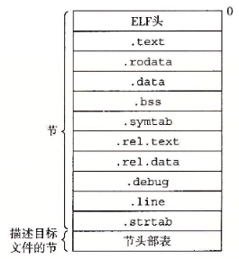
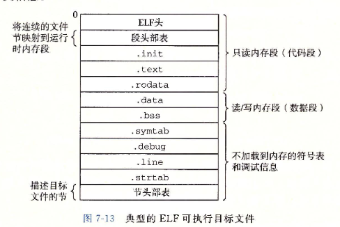

第七章 链接
链接是将各种代码和数据片段搜集并组合成为一个单一文件的过程。 链接器使得分离编译成为可能。
学习链接的目的
- 理解链接器将帮助你构造大型程序
- 理解链接器将帮助你避免一些危险的编程错误
- 理解链接器将帮助你理解语言的作用域规则是如何实现的
- 理解链接器将帮助你理解其他重要的系统概念
- 理解链接器将使你能够利用共享库
7.1 编译器驱动程序
7.2 静态链接
静态链接器：以一组可重定位目标文件和命令行参数作为输入，生成一个完全链接的、可以加载和运行的可执行目标文件作为输出。 链接器主要任务
- 符号解析：日标文件定义和引用符号，每个符号对应于一个函数、一个全局变量或一个静态变量（即C语言中任何以static属性声明的变量）。符号解析的目的是将每个符号引用正好和一个符号定义关联起来。
- 重定位：编译器和汇编器生成从地址0开始的代码和数据节，链接器通过把每个符号定义与一个内存位置关联起来，从而重定位这些节，然后修改所有对这些符号的引用，使得它们指向这个内存位置。链接器使用汇编器产生的重定位条目的详细指令，不加甄别地执行这样的重定位。
7.3 目标文件
目标文件形式
- 可重定位目标文件：包含二进制代码和数据，其形式可以在编译时与其他可重定位目标文件合并起来，创建一个可执行目标文件。
- 可执行目标文件：包含二进制代码和数据，其形式可以被直接复制到内存并执行。
- 共享目标文件：一种特殊类型的可重定位目标文件，可以在加载或者运行时被动态地加载进内存并链接。
编译器和汇编器生成可重定位目标文件（包括共享目标文件）。 链接器生成可执行目标文件。 目标文件是按照特定的目标格式来组织的，各个系统的目标文件格式都不同。
7.4 可重定位目标文件

.text：已编译程序的机器代码 .rodata：只读数据，比如printf语句中的格式串和开关语句的跳转表 .data：已初始化的全局和静态C变量。局部C变量在运行时被保存在栈中，既不出现在.data节中，也不出现在.bss节中。 .bss：未初始化的全局和静态C变量，以及所有被初始化为0的全局或静态变量。在目标文件中这个节不占据实际的空间，它仅仅是一个占位符。目标文件格式区分已初始化和未初始化变量是为了空间效率：在目标文件中，未初始化变量不需要占据任何实际的磁盘空间。运行时，在内存中分配这些变量，初始值为0。 .symtab：一个符号表，它存放在程序中定义和引用的函数和全局变量的信息。一些程序员错误地认为必须通过-g选项来编译一个程序，才能得到符号表信息。实际上，每个可重定位目标文件在.symtab中都有一张符号表（除非程序员特意用STRIP命令去掉它）。然而，和编译器中的符号表不同，.symtab符号表不包含局部变量的条目。 .rel.text：一个.text节中位置的列表，当链接器把这个目标文件和其他文件组合时，需要修改这些位置。一般而言，任何调用外部函数或者引用全局变量的指令都需要修改。另一方面，调用本地函数的指令则不需要修改。注意，可执行目标文件中并不需要重定位信息，因此通常省略，除非用户显式地指示链接器包含这些信息。 .rel.data：被模块引用或定义的所有全局变量的重定位信息。一般而言，任何已初始化的全局变量，如果它的初始值是一个全局变量地址或者外部定义函数的地址，都需要被修改。 .debug：一个调试符号表，其条目是程序中定义的局部变量和类型定义，程序中定义和引用的全局变量，以及原始的C源文件。只有以-g选项调用编译器驱动程序时，才会得到这张表。 .line：原始C源程序中的行号和.text节中机器指令之间的映射。只有以-g选项调用编译器驱动程序时，才会得到这张表。 .strtab：一个字符串表，其内容包括.symtab和.debug节中的符号表，以及节头部中的节名字。字符串表就是以nu11结尾的字符串的序列。
7.5 符号和符号表
每个可重定位目标模块m都有一个符号表 由模块m定义并能被其他模块引用的全局符号 全局链接器符号对应于非静态的C函数和全局变量 有其他模块定义并被模块m引用的全局符号 这些符号称为外部符号，对应于在其他模块中定义的非静态C函数和全局变量 只被模块m定义和引用的局部符号 他们对应于带static属性的C函数和全局变量。这些符号在模块m中任何位置可见，但是不能被其他模块引用。
认识到本地链接器符号和本地程序变量不同是很重要的
.symtab中的符号表不包含对应于本地非静态程序变量的任何符号。这些符号在运行时再栈中管理。链接器对此类符号不感兴趣。
定义为带有C static属性的本地过程变量是不在栈中管理的，相反，编译器在.data或.bss中为每个定义分配空间，并在符号表中创建一个有唯一名字的本地链接器符号
COMMON 未初始化的全局变量 .bss 未初始化的静态变量，和初始化为0的全局或静态变量
7.6 符号解析
链接器解析符号引用的方法是将每个引用与它输入的可重定位目标文件的符号表中的一个确定的符号定义关联起来。 编译器只允许每个模块中每个局部符号有一个定义。 静态局部变量也会有本地链接器符号，编译器还要确保他们拥有唯一的名字。
对全局符号的引用解析就棘手得多。当编译器遇到一个不是在当前模块中定义的符号（变量或函数名）时，会假设该符号是在其他某个模块中定义的，生成一个链接器符号表条目，并把它交给链接器处理。如果链接器在它的任何输入模块中都找不到这个被引用符号的定义，就输出一条（通常很难阅读的）错误信息并终止。
7.7 重定位
重定位将合并输入模块，并为每个符号分配运行时地址 重定位节和符号定义 链接器将所有相同类型的节合并为同一类型的新的聚合节 链接器将运行时内存地址赋给新的聚合节，赋给输入模块定义的每个节，以及赋给输入模块定义的每个符号 程序中的每条指令和全局变量都有唯一的运行时内存地址 重定位节中的符号引用 链接器修改代码节和数据节中对每个符号的引用，依赖于可重定位目标模块中称为重定位条目的数据结构
7.8 可执行目标文件

它还包括程序的入口点，也就是当程序运行时要执行的第一条指令的地址。
.init节定义了一个小函数_init，程序初始化代码会调用它。
因为可执行文件是完全链接的，所以不再需要.rel节。
程序头部表描述了可执行文件的连续的片被映射到连续的内存段的映射关系。
7.9 加载可执行目标文件
加载：加载器将可执行目标文件中的代码和数据从磁盘复制到内存中，然后通过跳转到程序的第一条指令或入口点来运行该程序。
7.10 动态链接共享库
共享库是一个目标模块，在运行或加载时，可以加载到任意的内存地址，并和一个在内存中的程序链接起来。这个过程称为动态链接，是由一个叫做动态链接器的程序来执行的。
共享库也称为共享目标，在Linux系统中通常用.so后缀来表示。
7.11 从应用程序中加载和链接共享库
动态链接是一项强大有用的技术。下面是一些现实世界中的例子 分发软件。微软Windows应用的开发者常常利用共享库来分发软件更新。他们生成一个共享库的新版本，然后用户可以下载，并用它替代当前的版本。下一次他们运行应用程序时，应用将自动链接和加载新的共享库。 构建高性能Web服务器。许多Web服务器生成动态内容，比如个性化的Web页面、账户余额和广告标语。早期的Web服务器通过使用fork和execve创建一个子进程，并在该子进程的上下文中运行CGI程序来生成动态内容。然而，现代高性能的Web服务器可以使用基于动态链接的更有效和完善的方法来生成动态内容。 其思路是将每个生成动态内容的函数打包在共享库中。当一个来自Web浏览器的请求到达时，服务器动态地加载和链接适当的函数，然后直接调用它，而不是使用fork和execve在子进程的上下文中运行函数。
7.13 库打桩机制
库打桩（library interpositioning），它允许你截获对共享库函数的调用，取而代之执行自己的代码。
基本思想：给定一个需要打桩的目标函数，创建一个包装函数，它的原型与目标函数完全一样。使用某种特殊的打桩机制，你就可以欺骗系统调用包装函数而不是目标函数了。包装函数通常会执行它自己的逻辑，然后调用目标函数，再将日标函数的返回值传递给调用者。
打桩可以发生在编译时、链接时或当程序被加载和执行的运行时。
7.14 处理目标文件的工具
在linux系统中有大量可用的工具可以帮助你理解和处理目标文件。特别地，GNU binutils包尤其有帮助，而且可以运行在每个Linux平台上。 AR：创建静态库，插入、删除、列出和提取成员。 STRINGS：列出一个目标文件中所有可打印的字符串。 STRIP：从日标文件中删除符号表信息。 NM：列出一个目标文件的符号表中定义的符号。 SIZE：列出日标文件中节的名字和大小。 READELF：显示一个目标文件的完整结构，包括ELF头中编码的所有信息。包含SIZE和NM的功能。 OBJDUMP：所有二进制工其之母。能够显示一个目标文件中所有的信息。它最大的作用是反汇编.text节中的二进制指令。 LDD：列出一个可执行文件在运行时所需要的共享库。
第八章 异常控制流
从给处理器加电，到断电为止，处理器做的工作其实就是不断地读取并执行一条条指令。这些指令的序列就叫做 CPU 的控制流（control flow）。最简单的控制流是“平滑的”，也就是相邻的指令在存储器中是相邻的。当然，控制流不总是平滑的，不总是一条接一条地执行，总会有出现改变控制流的情况。我们知道的程序内部状态改变的机制有两条：
跳转和分支 调用和返回 这些机制局限于程序本身的控制。当系统状态（system state）发生改变的时候，以上机制就不能很好地应对复杂的情况，例如：
数据从磁盘或者网络适配器到达 有一条指令执行了除以零的操作 用户按下 ctrl+c 系统内部的计时器到时间 现代系统通过使控制流发生突变来应对这些情况。这种机制叫做异常控制流（exceptional control flow）。异常控制流发生在计算机系统的各个层次。